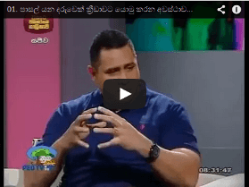
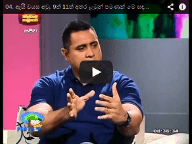
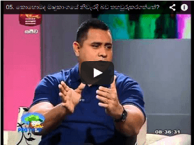
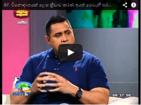

<div class="jumbotron video-sec">
    <h1>Videos on SportUnleash</h1>
    <div class="container col-md-12">
        <div class="row video-div">
            <div class="col-md-6">
                <a data-gallery="youtubevideos" data-title="Talavou Alailima explains what SportUnleash is about and the impact it will make." data-toggle="lightbox" href="http://www.youtube.com/embed/bjE8BF8vZRs">
                    
                </a>
                <a data-gallery="youtubevideos" data-title="Prof. Indra de Soya the Warden/Principle of S. Thomas College Mt. Lavinia, explains why SportUnleash" data-toggle="lightbox" href="//www.youtube.com/embed/ihMqd6Bta5M">
                    
                </a>
                <a data-gallery="youtubevideos" data-title="Major General Dr. C. Thurairaja on SportUnleash" data-toggle="lightbox" href="//www.youtube.com/embed/fY3L7w6Bwas">
                    
                </a>
                <a data-gallery="youtubevideos" data-title="ජුලින් බෝලිං ස්පෝර්ට් අන්ලීෂ් සමගින්." data-title="Hidden item 1" data-toggle="lightbox" href="http://www.youtube.com/embed/7l9LL6ctxdM">
                    
                </a>
                <a data-gallery="youtubevideos" data-title="වෛද්‍ය සීවලී ජයවික්‍රම ස්පෝර්ට් අන්ලීෂ් සමගින්." data-toggle="lightbox" href="http://www.youtube.com/embed/Cenz7DA2XOw">
                    
                </a>
                <a data-gallery="youtubevideos" data-title="Sportunleash press conference at GALADARI HOTEL Full Video" data-toggle="lightbox" href="http://www.youtube.com/embed/KElX_wVe3ts">
                    
                </a>
                <a data-gallery="youtubevideos" data-title="ටලවෝව් අලයිලිමා - ස්පෝර්ට් අන්ලීෂ් සහ එහි ඇති වැදගත්කම පිළිබඳ පැහැදිලි කිරීම." data-toggle="lightbox" href="//www.youtube.com/embed/nKTTXPWQGIY">
                    
                </a>
            </div>
            <div class="col-md-6">
                <a data-gallery="youtubevideos" data-title="01. පාසල් යන දරුවෙක් ක්‍රීඩාවට යොමු කරන අවස්ථාවේදී දැනට අපේ රටේ සිදුවෙන වැරදි මොනවාද?" data-toggle="lightbox" href="http://www.youtube.com/embed/0erXQk6WsHE">
                    
                </a>
                <a data-gallery="youtubevideos" data-title="02. පාසල් නිවාසාන්තර තරඟාවලි ආදී වශයෙන් ළමුන් ක්‍රීඩාවට යොමු කිරීම උචිත නැහැ කියන එකද ඔබගේ අදහස?" data-toggle="lightbox" href="//www.youtube.com/embed/Zk-EUXoFYbo">
                    
                </a>
                <a data-gallery="youtubevideos" data-title="03. ස්පෝර්ට් අන්ලීෂ් ක්‍රමවේදය යනු කුමක්ද?" data-toggle="lightbox" href="//www.youtube.com/embed/0Hio7o_XnvI">
                    
                </a>
                <a data-gallery="youtubevideos" data-title="04. ඇයි වයස අවු. 9ත් 11ත් අතර ළමුන් පමණක් මේ සඳහා තෝරාගත්තේ?" data-title="Hidden item 1" data-toggle="lightbox" href="http://www.youtube.com/embed/CzAVpjGovfA">
                    
                </a>
                <a data-gallery="youtubevideos" data-title="05. කොහොමද මෘදුකාංගයේ නිවැරදි බව තහවුරුකරගත්තේ?" data-toggle="lightbox" href="http://www.youtube.com/embed/QOua_Qv_wZc">
                    
                </a>
                <a data-gallery="youtubevideos" data-title="06. වයස අවු 9ත්-11ත් අතර කලයෙදී ඔහු / ඇය කළ යුතු ක්‍රීඩාව තෝරාගැනීම කල යුත්තේ ඇයි?" data-toggle="lightbox" href="http://www.youtube.com/embed/vYadAnPbH5A">
                    
                </a>
                <a data-gallery="youtubevideos" data-title="07. විනොදාංශයක් ලෙස ක්‍රීඩාව කරණ අයත් මෙවැනි පරීක්ෂාවක් කරගැනීම අත්‍යාවශ්‍යද?" data-toggle="lightbox" href="//www.youtube.com/embed/mafcBejmiKs">
                    
                </a>
                <a data-gallery="youtubevideos" data-title="08. කලින් දරුවන්ගේ ක්‍රීඩා කුසලතාවය හඳුනාගැනීමෙන් පාසාලකට තිබෙන ප්‍රයෝජනය කුමක්ද?" data-toggle="lightbox" href="//www.youtube.com/embed/kw3eP2xlh4g">
                    
                </a>
                <a data-gallery="youtubevideos" data-title="08. කලින් දරුවන්ගේ ක්‍රීඩා කුසලතාවය හඳුනාගැනීමෙන් පාසාලකට තිබෙන ප්‍රයෝජනය කුමක්ද?" data-toggle="lightbox" href="//www.youtube.com/embed/gd9UqKU7aXE">
                    
                </a>
                <a data-gallery="youtubevideos" data-title="ටලවෝව් අලයිලිමා ස්පොර්ට් අන්ලීශ් පිළිබඳ පැහැදිලි කිරීම." data-toggle="lightbox" href="//www.youtube.com/embed/Hnbyk5IxWbY">
                    
                </a>
            </div>
        </div>
    </div>
</div>
<script type="text/javascript">
$(document).ready(function(b) {
    b(document).delegate('*[data-toggle="lightbox"]', "click", function(a) {
        a.preventDefault();
        return b(this).ekkoLightbox({
            onShown: function() {
                if (window.console) {
                    return console.log("Checking our the events huh?")
                }
            },
            onNavigate: function(e, f) {
                if (window.console) {
                    return console.log("Navigating " + e + ". Current item: " + f)
                }
            }
        })
    });
    b("#open-image").click(function(a) {
        a.preventDefault();
        b(this).ekkoLightbox()
    });
    b("#open-youtube").click(function(a) {
        a.preventDefault();
        b(this).ekkoLightbox()
    })
});
</script>
